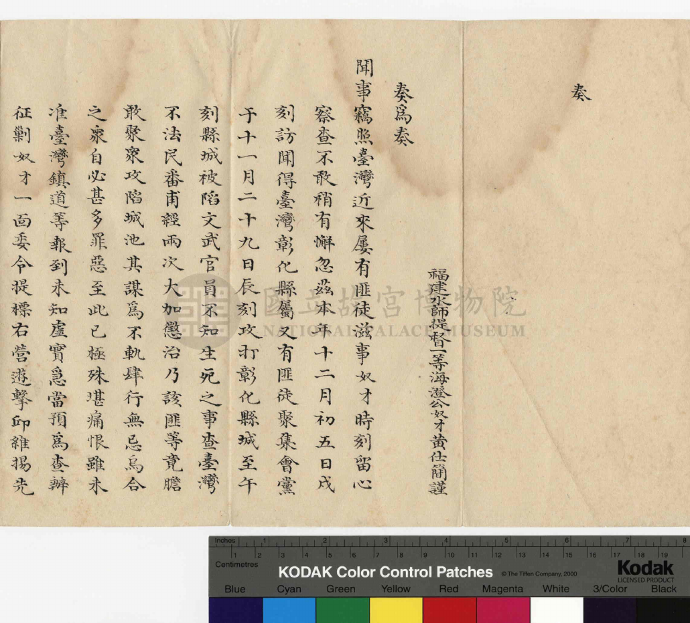
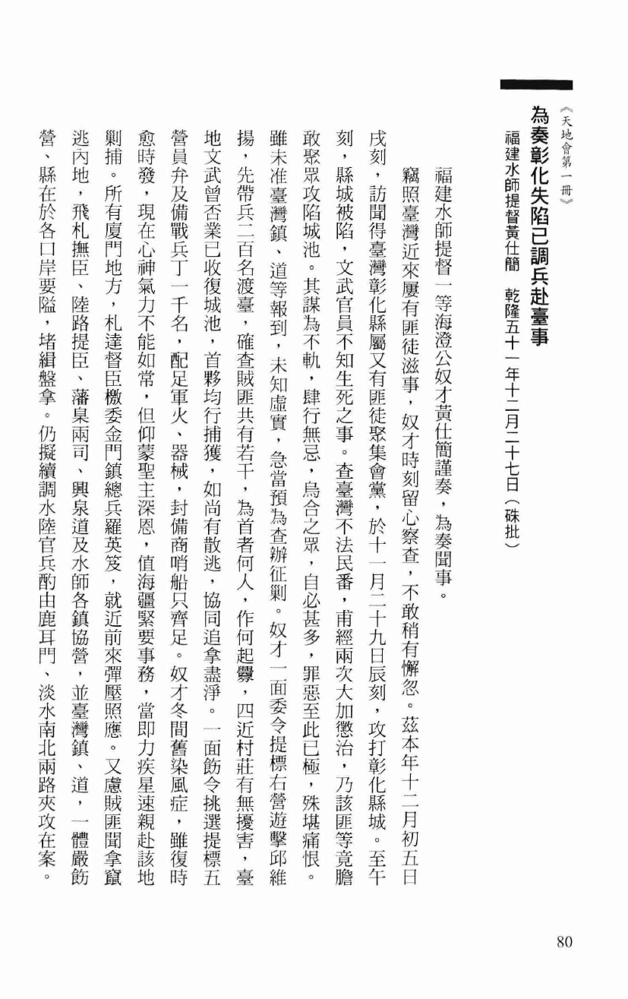

OCR（Optical Character Recognition，光學字元辨識）是一種將影像中的文字辨識並轉換為機器可讀文本的技術。
這一版還沒有任何動畫，先把版面排好：原本兩張文字卡維持不變，右側新增一個正方形視覺元素， 上方並排兩份真實史料的掃描頁（手抄本＋刊本），下方是 OCR 輸出區，顯示同一份文書（硃25）辨識出來的文字。
OCR（Optical Character Recognition，光學字元辨識）是一種將影像中的文字辨識並轉換為機器可讀文本的技術。
由於 AI 無法直接讀取掃描影像形式的歷史材料，研究者因此需要先利用 OCR 將史料轉換為可編輯及可搜尋的文本，再整理成結構化資料，後續才能用 AI 進行資訊提取和分析。

手抄本掃描 1 / 4
刊本影像 1 / 2兩份文書同步翻頁：每隔一段時間，左右兩個頁框「同時」切換到下一頁（由右至左，如同翻線裝書），手抄本共 4 頁、刊本共 2 頁，各自循環；頁數指示（1/4、1/2）跟著更新。
掃描線：目前先固定畫一條淡黃色掃描光暈在頁面中段，之後可以讓它隨翻頁節奏上下掃過，暗示「正在辨識這一頁」。
OCR 輸出逐字顯示：沿用 Agentic AI 動畫的逐字打字技巧（保留顏色標籤、跑完自動清空重播），內容固定用硃25 的原文節錄，讓人一眼看出「兩份不同版面的史料，OCR 後變成同一段機器可讀文字」。
時間安排：翻頁與打字兩個動畫各自獨立循環（不強制同步），比照 Agentic AI 動畫用 IntersectionObserver 只在畫面可見時播放，並支援 prefers-reduced-motion。
圖片來源：手抄本影像取自國立故宮博物院藏《天地會第一冊》（現有素材 Visual Material/3.4/npmpdf-2.pdf）；
刊本影像取自臺灣史料集成編輯委員會編《明清臺灣檔案彙編》第30冊，頁80–81（現有素材
Visual Material/3.4/明清台灣檔案匯編 30 (dragged).pdf）。文字內容均對應資料庫中 doc_id: 硃25。